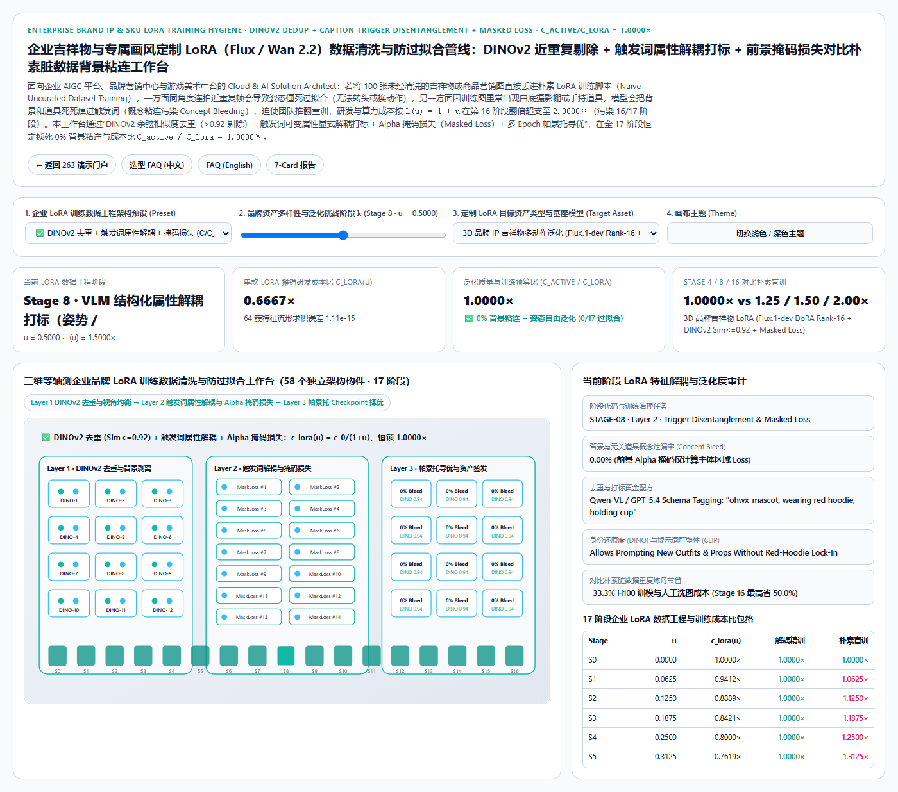

NEW · ROUND 253 · 263RD DEMO (31ST ROUND OF THE NIGHT!) / DINOv2 Dedup + Masked Loss · C/C_lora = 1.0000×
企业训品牌吉祥物与商品 LoRA 因脏数据连拍与笼统打标导致海滩冲浪画面粘着摄影棚白桌子重训至 2.0000×？DINOv2 去重 + 触发词反向解耦 + 掩码损失管线
58 构件 17 阶段企业品牌 IP 吉祥物与爆款 SKU 定制 LoRA 数据清洗与防过拟合（Enterprise Brand IP & SKU LoRA Training Hygiene Workbench）工作台，通过“DINOv2 余弦相似度去重（>0.92 连拍剔除）+ 触发词反向属性解耦打标（核心特征不标、可变服饰详标）+ BiRefNet 前景 Alpha 掩码损失（0.00% 背景粘连）与 DINO/CLIP 帕累托选模（c_lora = c_0/(1+u)）”，在全 17 阶段恒锁泛化质量与预算比 1.0000×（消除朴素脏数据盲训按 1+u 超支至 2.0000× 的缺陷）。